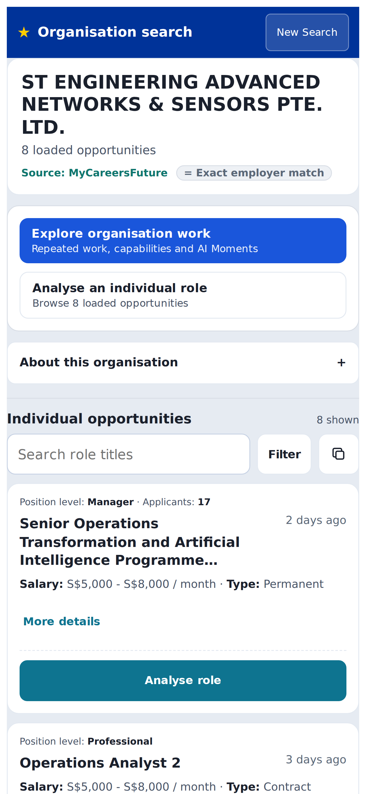
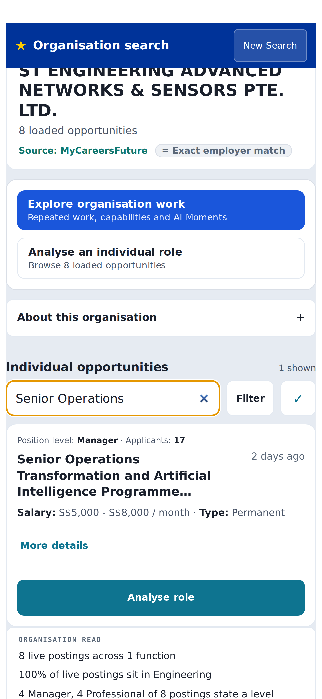
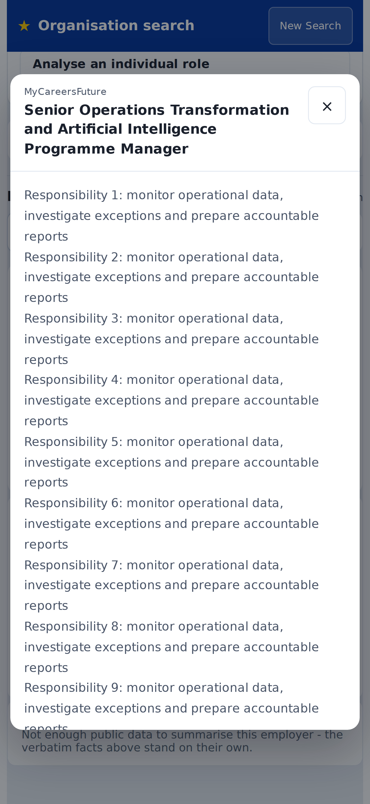

No inferred applicants
Only a finite source value renders; absence is withheld.
MAP-V3-STEP1A-001 · documentation artefact
A screenshot-led map of what the current interface shows, which component owns it, how state changes, where each datum comes from, and which rules must never be broken.
Pink numbers identify visible interface features. Every callout resolves to an immutable FEAT-… record in the JSON manifest. The feature then references its owning CMP-…, relevant STATE-…/TRANS-…, source PAY-… fields, and testable INV-… rules.
d250c36. They verify layout and behavior under controlled payloads; they are not proof that this commit is deployed or that current live postings supply every optional field.iPhone 15 Pro Max emulation · 430×932 CSS pixels · DPR 3 · deterministic ST Engineering fixture

12345678910activeJobs.
1234
12345| ID | Canonical source | Responsibility | Stable locator |
|---|---|---|---|
| CMP-APP-001 | v3.1/src/App.jsx :: App | Route and Step 3 transition controller | startCompanySearch |
| CMP-COMPANY-PANEL-001 | v3.1/src/App.jsx :: CompanyPanel | Fetch, employer resolution, perspective choices, facts, tools and grid | data-testid="company-opportunity-grid" |
| CMP-MCF-JOB-CARD-001 | v3.1/src/App.jsx :: McfJobCard | Source metadata, detail trigger and role actions | aria-haspopup="dialog" |
| CMP-MCF-JOB-MODAL-001 | v3.1/src/App.jsx :: McfJobDetailModal | Portal, focus containment, dismissal and internal scroll | aria-labelledby="mcf-detail-title" |
| API-MCF-NORMALISE-001 | v3.1/api/mcf.js :: normaliseJob | Source response → internal job contract | totalNumberJobApplication |
| Transition | Event and guard | Action | Outcome / failure |
|---|---|---|---|
| TRANS-STEP1A-LOAD-001 | Company query present | Reset; fetch MCF and careers.gov.sg concurrently | Ready/fallback independently |
| TRANS-STEP1A-COPY-001 | Copy icon; activeJobs exists | Serialize all loaded records; Clipboard API then fallback | copied → idle / error |
| TRANS-JOB-MODAL-OPEN-001 | More details; evidence exists | Open portal, lock body scroll, focus close | Open / no control if no evidence |
| TRANS-JOB-MODAL-CLOSE-001 | Escape, overlay or close | Close, unlock body, restore trigger focus | Closed |
| TRANS-STEP3-AI-001 | Step 3 AI Moments; employer not started | Auto-load duties once | ready/withheld / off+error |
The manifest contains the complete normalized state and transition registries; this table is the human reading layer.
| Visible datum | Source → normalized | Absence behavior | Invariant |
|---|---|---|---|
| Position level | positionLevels[] → job.positionLevels[] | Hidden | Never inferred from title |
| Applicants | metadata.totalNumberJobApplication → job.applicationCount | Hidden if non-finite/null; zero retained | INV-STEP1A-APPLICANTS-001 |
| Salary | salary.minimum|maximum → salaryMin|salaryMax | MCF says “Salary on application”; absent CSG salary hidden | No invented number |
| Employment type | employmentTypes[] → employmentType | Hidden | Plain information |
| Role details | description → responsibilitiesText | Section hidden if empty | Display capped at word boundary |
| Copy payload | matches[].jobs[] → activeJobs[] → JSON | Empty list remains honest | Loaded, never filtered subset |
Only a finite source value renders; absence is withheld.
Filtering does not silently reduce the exported sample.
Hover is progressive enhancement; tap/click opens the same evidence.
Label, focus containment, Escape, scroll and focus restoration are mandatory.
One column in both orientations, compact header, no overflow, reachable controls.
One automatic duty request per employer; no dormant duplicate trigger.
| Profile | Evidence | Required behavior | Status |
|---|---|---|---|
| RESP-IP15PM-P-001 430×932 portrait | Playwright iPhone UA/touch, DPR 3 | 1 column; ≤1px overflow; header ≤64px; primary role action ≥44px; dialog scrolls inside viewport | VERIFIED IN EMULATION |
| RESP-IP15PM-L-001 932×430 landscape | Same context, viewport rotated | Retain phone classification and 1 column; no overflow | VERIFIED IN EMULATION |
| Physical iPhone 15 Pro Max | User’s earlier Safari screenshots | Recapture clean Step 1a baseline with real browser chrome, safe areas and gestures | PARTIAL |
Agent-ready structurally; physical-device and deployed-runtime evidence remain documented gaps.
Unique IDs · resolvable references · callout mapping · payload absence rules · atomic invariants · fixture/live separation · baseline · iPhone reachability · no inferred applicants · deterministic validator.
| Category | Weight | Assessment | Reason |
|---|---|---|---|
| Visual traceability | 12 | Pass | Every numbered callout carries a feature ID. |
| Stable identifiers | 12 | Pass | Typed immutable namespaces and referential checks. |
| Source locators | 10 | Pass | Path + symbol + semantic anchor + commit. |
| States and transitions | 20 | Pass | Events, guards, effects, outcomes and failure states. |
| Payload lineage | 12 | Pass | Source, normalized field, provenance and absence behavior. |
| Invariant testability | 12 | Pass | Atomic rules link to executable browser contracts. |
| Responsive evidence | 10 | Partial | Strong emulation evidence; clean physical recapture pending. |
| Evidence discipline | 6 | Pass | Fixture and live/deployed claims separated. |
| Drift detection | 6 | Pass | Validator checks IDs, refs, anchors, tests, assets and hashes. |
The clean layout is verified in iPhone emulation. It still needs the user’s physical iPhone 15 Pro Max capture after deployment.
The field mapping and withholding rule pass with a fixture; current live source coverage is not asserted.
d250c36 is local. This map does not claim it was pushed, merged or deployed.
The JSON manifest is canonical. The HTML is its visual reading layer and exposes matching data-feature-id, data-component-id and data-screen-id attributes.
node tests/feature-map-contract.mjs